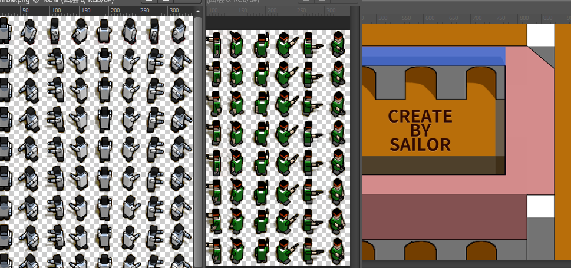
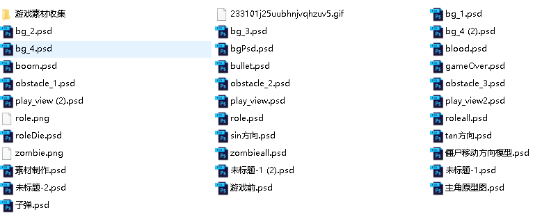
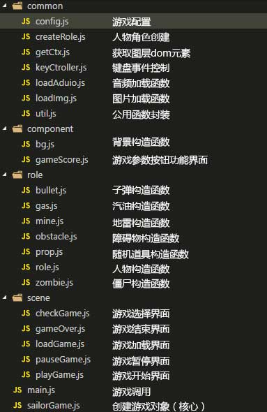
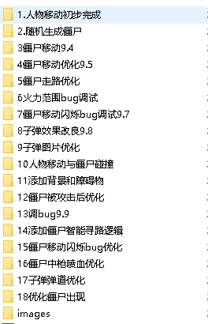
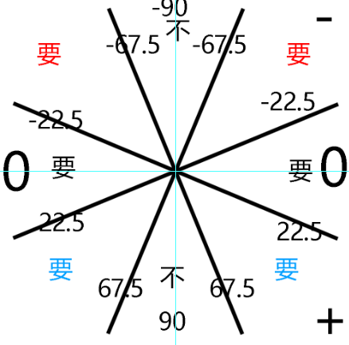

看周围的朋友，经常在业余时间搞自己的小作品，小游戏。感觉自己也不能落伍，再加上大飞哥模块化开发会飞的小鸟的影响。我决定自己也来做个游戏，并且用到了大飞哥模块化开发的思路。
游戏演示：整个游戏不知道有多少行代码，不过有20个js文件，封装着不同的功能对象。我也懒得去数多少行了。为了巩固一下学过的知识并给有需要的朋友一些小小的帮助，我就记录下整个游戏的制作过程。
因为刚毕业的时候做过一年的设计工作，所以有设计的基础，所以除了游戏人物参考4399上《僵尸危机》flash游戏的人物UI设计，其他设计都是寻找素材PS合成。
 整个程序包括3个文件夹和一个页面，images放着程序的所有图片（需要psd源文件的朋友可以找我拿），sounds文件存储程序的音效，index就不多说了。
js文件就重点说下，没仔细数，大概有20个文件，main.js是入口文件，sailorGames.js是对其他js文件的调用，剩余的js文件都是对各个游戏对象功能的封装。显示见下图：
然后说下原理，源代码中最核心的模块就是sailorGames.js这个文件，我是这么理解的，游戏说白了就是动画，而动画就肯定有动画帧，我们就需要把每一帧各个对象需要完成的事情通过代码做出来就可以形成动画，然后通过鼠标和键盘可以改变动画剧情发展方向就形成了游戏。
所以首先先要找到一个方法让这个循环一直进行下去。我用的是HTML5标准定义的requestAnimationFrame()方法，这个方法是接受一个函数作为参数，然后浏览器根据绘制的最佳时机调用这个函数，类似递归。
(function loop() {
if (!_this.isPause) {
//判断是否双人
// 人物绘制前清空图层
_this.role.clearRole();
// 绘制人物
_this.role.init();
// 重复执行人物移动函数
_this.roleCtrl1.moveStep();
// 绘制人物2
_this.role2 ? _this.role2.init() : '';
// 重复执行人物移动函数
_this.role2 ? _this.roleCtrl2.moveStep() : '';
// 获取僵尸数组传入创建创建子弹函数
_this.role.createBullet(_this.zombie.zombieArr);
_this.role2 ? _this.role2.createBullet(_this.zombie.zombieArr) : '';
// 重复绘制僵尸
// 获取人物坐标中心点
if (_this.dobuleRole) {
_this.roleXY = {
role1: {
x: _this.role.roleCx + _this.role.roleW / 2,
y: _this.role.roleCy + _this.role.roleH / 2,
isDie: _this.role.isDie,
},
role2: {
x: _this.role2.roleCx + _this.role2.roleW / 2,
y: _this.role2.roleCy + _this.role2.roleH / 2,
isDie: _this.role2.isDie,
}
};
} else {
_this.roleXY = {
role1: {
x: _this.role.roleCx + _this.role.roleW / 2,
y: _this.role.roleCy + _this.role.roleH / 2,
isDie: _this.role.isDie,
},
};
}
_this.zombie.zombieMove(_this.roleXY);
};
requestAnimationFrame(loop);
})();
有了上面这个循环，游戏框架大体就搭起来了，接下来只要把每一帧动画都需要发生的事情写入到上面的框架里面，浏览器就会自动帮我们运行了。
游戏大体思路就是这样了，接下来是封装并且调用各个功能模块。下面是我的实现过程的备份，当时想着随便玩玩，没想着写很多代码，所以没有用git版本控制，用复制粘贴这种原始的备份方法，结果越写越多。。。
游戏简单逻辑实现就不在这里详谈了，我就讲下我觉得我做起来比较难搞的一些功能： 1，首先是丧尸朝着人物自动移动的功能，我这里用到了Math.asin()。通过获取人物和丧尸的水平距离w还有垂直距离h。再用勾股定理求取人物和丧尸的直线距离，再使用Math.asin()取得他们之间的夹角angle；
// h为丧尸和主角的垂直距离
// l为丧尸和主角的水平距离
var angle = -Math.asin(h / l) * 180 / Math.PI;
但是这个angle不是简单的0-360的范围(keng a!!)。取值范围是：-90 <=angle<=90;于是要进行第二次判断，看下图。这个图是angle可能会取到的值。首先是angle>67.5则丧尸向下运动，angle <-67.5则丧尸先上运动。如果angle<22&&angle<-22，那么人物有可能在丧尸左边或者右边，那么就要进行二次判断，通过丧尸水平坐标和主角水平坐标的差值可以判断右边还是左边。。接下来的angle<-23&&angle>-67和angle>23&&angle <67也是通过计算水平差或者垂直差来获取正确的方向。。。
然后是丧尸避开障碍物功能的实现。我的实现思路是这样的，用到了是canva中的isPointInPath()，通过判断丧尸中心坐标点是否在障碍物路径内让丧尸短暂的失去之前的自动移动功能并且短暂进入另一种自动寻路的功能。封装的函数是： autoMove: function(dire, obj, w, h) {........}
- dire：丧尸此时的运动方向；
- obj：撞墙的丧尸对象；
- w：丧尸与人物的水平距离；
- h：丧尸与人物的垂直距离；
暂时就写到这里吧，做的时间比较仓促，都没有进行二次优化过，感觉有些算法并不是和合适，所以还需要修修改改。有兴趣的朋友可以去看下源代码，都保留着最初的注释。